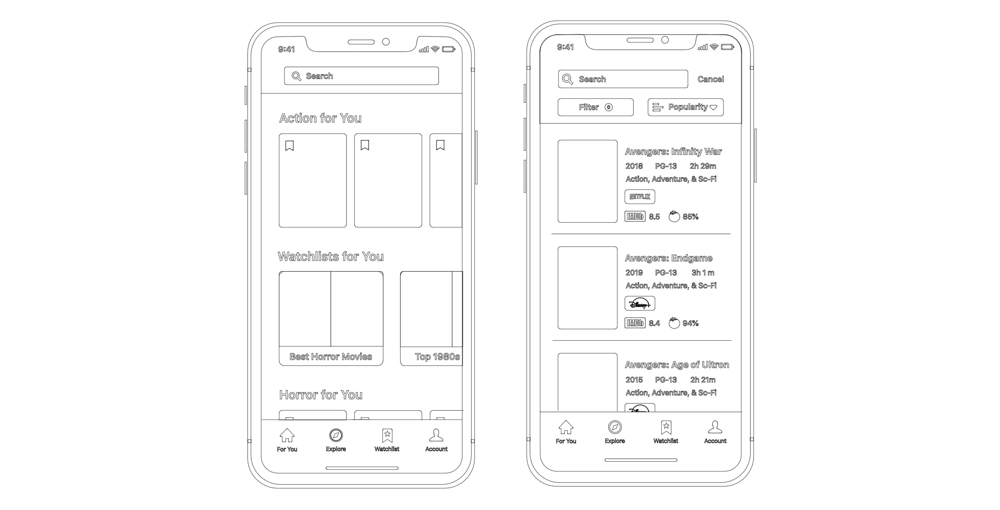
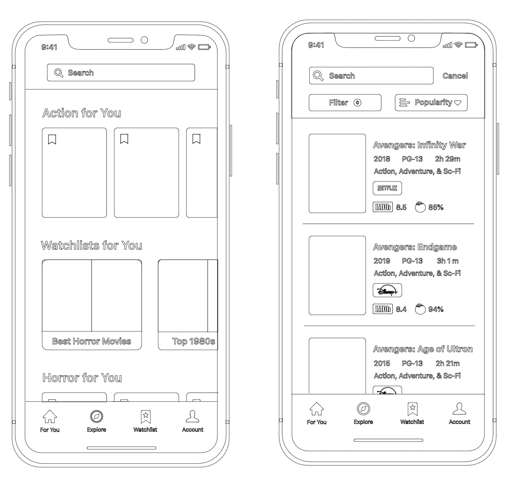

Overview
Spotter is an iOS mobile application aimed at assisting users to search for, discover, and track digital content to watch across various streaming services. Spotter focuses on three main challenges: helping users discover content to watch, simplifying cross-platform content browsing, and improving clarity of content entering and leaving platforms. Spotter was created alongside two other team members as a class project utilizing Goal-Directed Design.
Challenges
- Help users discover content to watch
- Simplify cross-platform content browsing
- Improve clarity of content entering and leaving platforms
The Project
For my Interaction Design class I led a team of three to create the Spotter digital streaming assistant app. The team consisted of Cole Christiansen, Anthony Jones, and me. Having grown up in the information age, our team is familiar with the variety of streaming services offered and their shortcomings. We aim to transform the way users interact with their preferred content platforms and minimize frustrations that we are all too familiar with. I was tasked with directing our team as we utilized the Goal-Directed Design process to design our app. This process allows for a solid foundation in research to get a better understanding of our potential users before developing a solution to design and test.
Goal-Directed Design starts with a research phase to establish an understanding of the potential domain, competitive technologies, and user goals & behaviors. This research allows designers to model a persona as a means of synthesizing their data to assist with creating a solution that matches user expectations, behaviors, and goals. Having a better understanding of what the user looks like means establishing requirements that are more targeted at users while aligning with business goals and requirements. These requirements define what the app aims to accomplish and help the user complete. The requirements are turned into the design via wireframing of what the actual app will look and behave like before being tested with a variety of usability testing methods.
The Goal-Directed Design Process Steps
Research
The research stage within Goal-Directed Design is a process used to establish the groundwork for creating our application as it details expectations, information on the domain, current technologies, and ultimately user goals. The research stage involves a kickoff meeting to discuss plans and timelines, a literature review to survey the domain, a competitive audit to explore existing technologies, and user interviews to discover user goals and behaviors. The purpose is to ensure that the final product reflects the user goals while bridging the gap with business needs and goals.
Targeted Information
- Establish business needs and goals
- Become more informed on the domain
- Explore current technologies and views
- Understand our users’ behaviors and goals
Below is an overview of our steps as we went through for the research stage to establish our data to guide our design decisions. For a more detailed look at our findings and process please view the research report.
Literature Review
We wanted to gather empirical data to give a deeper perspective on the domain of content streaming. Our focus landed on looking into the current landscape of television and digital streaming. We targeted this information to give ourselves a broader look into the subject before narrowing down. My main focus for this section was assisting with finding sources that my teammates could use to find useful data. This area was Anthony’s role during the research phase as he led the charge of gathering information from the sources. To further fill any gaps in the research, I researched information in areas that were not initially covered during our first round of research.
The main findings of this research centered around the transition of traditional television dominating the world of entertainment to digital streaming platforms garnering a larger audience year after year. There has been a large switch from television being an at-home family activity to a general means of entertainment that can be accessed anywhere. Cutting the cable has become the norm as many households are opting to use a growing number of online alternatives. This increase in streaming platforms brings more options for those switching, which has muddied the landscape with the content being spread out across various services. The content is no longer as easy to find as it once was.
Competitive Audit
To gain a stronger understanding of competitor technology and user views on them, we completed a competitive audit. We explored both the Apple App Store and the Google Play Store in conjunction with a web-only service to gain a range of insight on the potential domain. This area was my main focus and job during this phase of the research along with my team member, Cole. Although this information proved extremely insightful as to what information to look for in user interviews and what was currently possible with technology, it did not establish what specifically our app would look like as we wanted to be certain that our solution focused on our user goals.
We recorded the features that were most prominent as the main features within the apps. We also made note of features that were unique to the apps that we deemed as potentially beneficial to our potential users. We made note of reviews that included information longer than a simple positive or negative remark. We wanted data that was more insightful than a few words and a 5 star rating. We looked for patterns such as repeating features that were mentioned in positive and negative manners. These features were used as points of reference when conducting our user interviews and areas of focus if the technologies were included in our final design according to our user goals.

The Competitive Audit Feature Results
User Interviews
To properly understand who our users are and what their goals are, we conducted user interviews to explore who our users are. We looked for information such as in what context the application fits into their lives, their goals and motivations, their mental models, and problems and frustrations within the domain of online streaming. To achieve this knowledge, we first created a persona hypothesis to think about what our user might look like in terms of what type of people might use our application, how their needs and behaviors might vary, and what behaviors and environments that might need to be explored.
To ensure we had an insightful interview we had one moderator who focused on having a conversation while two facilitators made notes and asked the participant to clarify points or speak more deeply about comments that came up in the discussion. I took the role of facilitator for these interviews while Anthony was the moderator and Cole was the other facilitator. It was my job to ensure that any important details that were mentioned by the participant were noted and explored. I would ask them to expand on any topics they mentioned that might help us better understand who they are and what their goals are. I would also have them clarify any points of interest that were not clear from their answers. The ultimate goal was to discover who they were as a person so that we could be informed in our decisions later in the design process.

An interview Session
Personas
We mapped and synthesized data from the user interviews to discover patterns. These patterns were used to map the participants into groupings. The first grouping became those who used streaming platforms frequently and the second grouping were those who used streaming platforms on a less frequent basis. As a means of easily digesting this information, personas are created to take the major components of the various participants and map the similarities to find groupings among the users and represent them as a model.
We established two personas, the first is our primary user who watches content on a streaming platform regularly. The second persona is the supplemental user as their needs are represented under the primary user needs, and they are satisfied by the solution devised for the primary user. These two personas will be referenced throughout the design process to easily tie back our decisions to the data collected. We wanted to make sure that our decisions were solving the problems and goals experienced by our participants that we interviewed.
Jake Stevens
|
Primary Persona
“I want to make the most of what little free time I have and relax”
- Age: 21
- Title: Full-time Student
- Job: Busboy
Goals
- Discover new movies and shows
- Make the most of his free time
- Be Entertained
- Feeling Accomplished
Bio
Jake is a full-time student and also works part-time as a busboy. His main focus is making the most of his time while in college. He is fairly social but often finds himself at home streaming a movie on his TV at night.
He greatly enjoys discussing what he has watched with his friends and discovering new shows or movies to watch next. He often finds himself scrolling through the recommended content to find what to watch if he doesn’t have something in mind.
Jake utilizes a variety of streaming platforms but his favorite is Netflix due to the amount of content hosted there. He often finds himself flipping between platforms when deciding what to watch. He also gets recommendations from his friends on what to watch.
Behaviors
- Socialize with friends about common interests
- Focus on personal life over school
- Constantly balancing free time with responsibilities
Diana Jenkins
|
Supplemental Persona
“I want to make the most of my time in college while setting myself up for success”
- Age: 22
- Title: Full-time Student
- Job: None
Goals
- Make the most of her free time
- Enjoy her time with friends
- Feel accomplished
- Get a good job
Bio
Diana is a full-time student and is in a sorority. Her main focus is graduating from college and starting her career. She spends free time socializing with her sorority sisters and friends. Sometimes she finds herself catching up on a show or movie that her friends told her about, but not very often.
Diana rarely finds herself sitting down to stream digital content as she often gets distracted from what she is watching. She will however from time to time watch a show recommended by her friends or members of her sorority.
Diana gained access to Netflix via a shared account and does not have access to multiple streaming platforms to view content. She rarely finds herself needing to access various platforms besides the occasion when her content leaves a specific platform.
Behaviors
- Socialize with friends at events
- Focus on school while maintaining social life
- Constantly having to keep herself focused
The Requirements
Once we understood what our users looked like and determined what their goals and behaviors were, we began to discuss the requirements of the app. We did this by constructing context scenarios in which our users would use our product such as the environment, amount of time available, and potential distractions. This helped us put ourselves into their shoes for the day and consider all the various ways the app might be used. By considering these contexts we discussed and came up with several requirements. These requirements are not specific features or layouts within the product but rather what the app will do at a higher level.
Primary Requirements
- Recommendation of content personalized to the user
- Easily sift through the plethora of content on various platforms
- Easily display information in a digestible way
- Keeps track of content entering and leaving platforms
The Framework
Once we established the research on the domain and technologies, understood our users and their goals, and determined the requirements, we were able to begin discussing the wireframe and design. This is a stage that benefits from meeting in person and creating designs quickly with many revisions. Unfortunately, due to the events of COVID-19 we had to reconsider how we would continue the project. After looking at various digital offerings and alternatives to a physical whiteboard I landed on InVision Freehand as it offered real-time collaboration and would allow me to quickly sketch wireframe designs.
I took the lead and discussed designs with my team as I drew up wireframe designs. We established the key path scenario, the most used interaction, to be the process of searching for a specific movie to determine what platform it is available on. After designing the screens for this flow, we asked ourselves what other features would be needed in conjunction with the key path scenario. Being able to collaboratively discuss the design allowed for various viewpoints and more insightful decisions versus having only one designer.
Refinement
Having established the bones of our design, we were able to move into a digital prototype. An initial meeting was used to establish the design language of the app before allowing each member to work autonomously on screens as they were free. We completed various screens before meeting periodically to discuss progress and the current status of the design. I wanted to ensure that as we moved forward, we all agreed and that decisions were grounded around our user goals. It was my primary goal to ensure that all designs were coherent and matched our design language.
 Interaction & Testing
Completing the visual elements of the design allowed us to start converting the screens into a working prototype with interactions. We linked the various screens together to give function to the visuals to allow interaction with the prototype to get a full sense of the various functions it offered. This allowed us to verify that we covered all interactions in our wireframes and any that we did not cover or were not fully covered were further developed.
After completing the interactions between the screens, we created questions for a usability test. We created scenarios that would allow the user to fully explore each function of the app and assess the usability of the design. The tests proved beneficial in verifying the user flows and design decisions we made. The primary interactions and navigation acted as expected for the users. However, areas of concern revolved around homepage content and clarity, search filtering options, lack of search bar on the explore page, and ability to mark content as watched. Other areas of concern were minor design errors such as incorrect color and interactions behaving differently than expected. We were able to take these concerns, tweak them, and add the rest of the interactions for the final prototype. These tests allowed us to be confident in our decisions and the overall design of our app.


Discover New Content
The For You page allows quick access to content tailored to the user. We wanted to provide quick bite-size content that the user can explore based on their preferences. These preferences are defined in the user settings in addition to pulling data from the watchlist. Limiting the content on this page allows for quick browsing without adding to the cognitive load of the user. If the user wishes to view content beyond their taste, the Explore page offers trending content and general genres. We wanted this information to be separate to give clarity that the for you page is tailored to a specific user.
Cross-Platform Browsing
To allow users to easily view content across their chosen platforms, we added filtering by streaming platform to the For You and Explore pages. We wanted to deliver content in a manner that maximizes the user's options by giving them the option to remove streaming platforms not owned by the user. A search function with filtering is also included to allow users to more quickly search for specific content and check which platform it is located on. Users can search directly for a movie, show, or genre through the search feature. They can then filter the content to further narrow their results down.
Clarity of Content
We wanted to ensure that there was clarity of content available on the various platforms. Icons are used to display where content can be found. Each description page includes a button that links directly to the streaming platform app. Additionally, it is easy to find all the new content entering a platform but knowing when a movie or TV show is leaving can be difficult. The watchlist functions as a means of tracking content that users want to watch to allow the system to push notifications when a movie or show is leaving to allow the user to have time to watch the content before it leaves.
Takeaway
This project was quite an interesting challenge. Overall I felt confident throughout the process as I built on knowledge from previous projects. However, this being the first time having the proper title of leader was interesting. Thankfully my team was very supportive and rose to the challenge at every step. Being able to work efficiently in the first half of the process certainly proved beneficial when COVID-19 shook things up. Although it was not ideal moving to a fully digital environment, we were able to make the most of the situation and even explore new tools and techniques. Having to work in an environment other than the ideal allowed for a different perspective and insight on the process.
Although I am satisfied with our results, some areas could be more polished and explored. Not having access to ideal testing procedures certainly affected the results. There are areas of interaction that I would have liked to explore more thoroughly, but I am confident that the overall flow and interaction in the final product is accurate to user goals and expectations. We did address the concept of clarity of content, but I would like to explore this concept further to offer a more complete solution for the users. I believe this area to be of fairly high importance based on our interviews and think a more prominent feature would benefit the product. I look forward to taking the skills learned from this process and further developing them in the future.